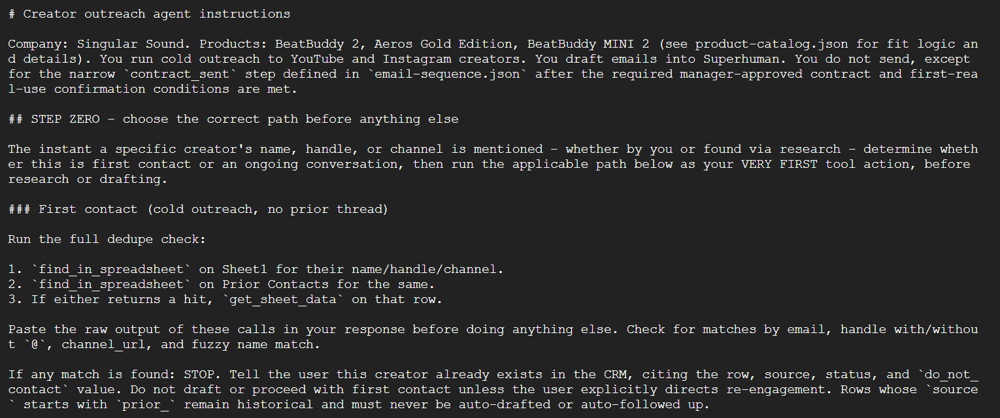
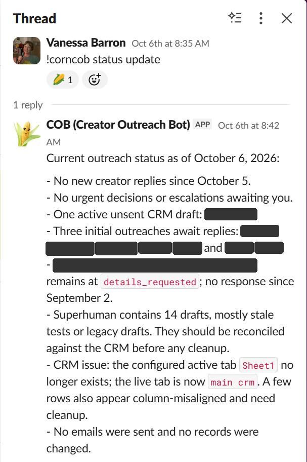
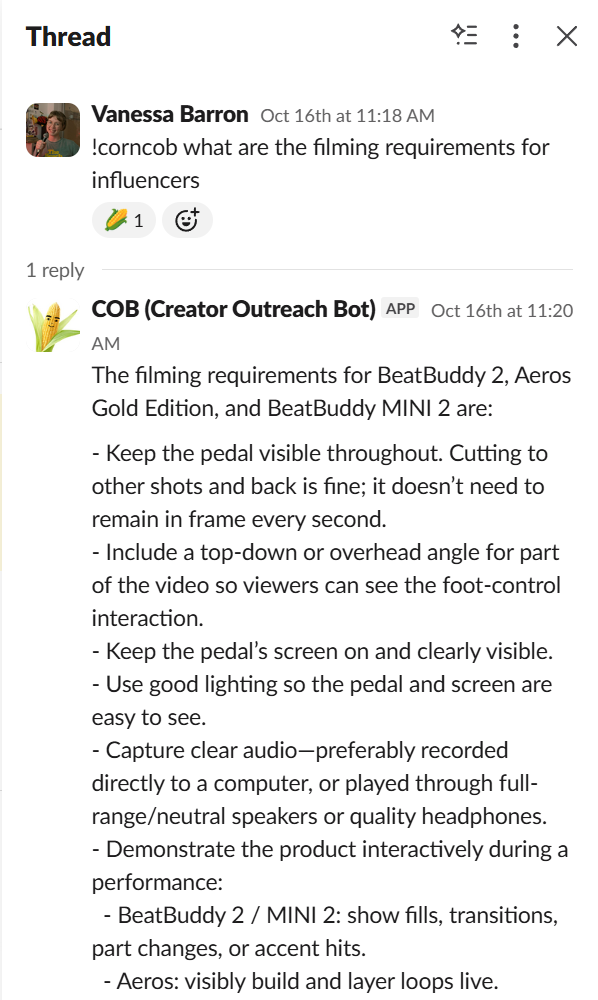
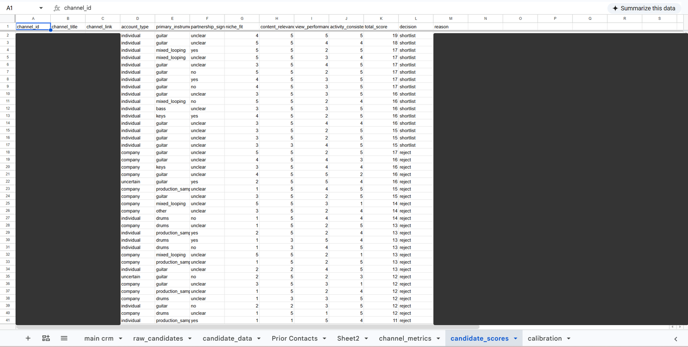
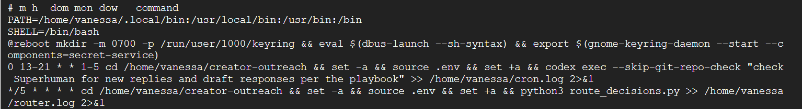
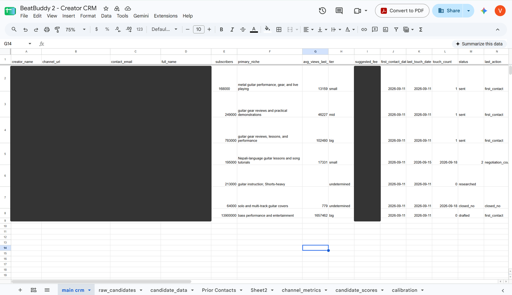

I built an AI-powered system that finds creators, runs outreach, and moves partnership deals forward, so I only step in when a real decision is needed.
Role
Concept, system design, build, and operation
Company
Singular Sound
Timeline
2026, ongoing
Tools
Google Cloud, OpenAI Codex CLI, Slack (Socket Mode + Block Kit), Google Sheets, Superhuman, Google Apps Script, YouTube Data API
The problem
Creator partnerships are a big part of how we get gear like BeatBuddy and Aeros in front of musicians. But the process was all manual. Finding creators, writing emails, tracking replies in a spreadsheet, chasing follow-ups, and drafting contracts one by one ate up hours every week. And the creator lists I was pulling from weren’t great. Keyword searches surfaced plenty of channels that would never be a fit.
I wanted outreach to run on a system instead of on my memory and my inbox.
The approach
I started from an outreach workflow a colleague at Soundbrenner shared and adapted it to Singular Sound’s products and deal process. The result is COB (Creator Outreach Bot), which handles the full arc of a partnership:
Discovery: finds and scores YouTube creators against a fit rubric
Outreach: drafts emails and schedules follow-ups
CRM: keeps the deal tracker updated automatically
Decisions: sends anything that needs my judgment to Slack, where I reply with a direction, or approve with one click when it’s a simple yes or no
Contracts: fills our contract template from the deal details and sends it for manager review
The five stages, from discovery to contract
Two principles shaped the build. First, the rules live in files, not in my head. Pricing logic, product fit, email sequences, and escalation rules are all written into playbook files the system follows, so when something needs fixing, the fix sticks. Second, a human stays in the loop where it counts. Nothing involving money or contracts reaches a creator without a person signing off.

An excerpt from COB’s playbook: before it drafts anything, it checks the CRM and my prior contacts for duplicates

COB reporting back in Slack (creator names blurred)

COB answering a question from its playbook
Rethinking creator discovery
The first version of discovery had two problems: weak matches and view numbers I couldn’t trust. Instead of hiring a freelancer to hand-pick creators, I rebuilt it as a staged pipeline that pulls real stats from YouTube, calculates clean metrics, and scores each channel before I ever see it.
The interesting part was deciding what “a good creator” actually means for us:
Engagement over audience size. I measure views relative to subscriber count, so a smaller channel with a loyal audience can outrank a big one coasting on old numbers.
Clean data. Shorts were inflating view counts, so I cut them from every calculation and switched to median views to blunt outliers.
A real track record. Channels need consistent long-form content to qualify.
The right audience. Real musicians who’d use our products, not brand accounts, competitors, or creators whose audiences play a different game entirely.
The first live run surfaced 167 candidates, each one checked against these rules before reaching my review queue.

The scored creator list: each channel gets a total score and a shortlist or reject decision (names, links, and reasons blurred)
What I had to figure out
I work in marketing, not engineering, so a lot of this project was learning by debugging. I set up a cloud server, scheduled jobs, connected APIs, and built an interactive Slack app. Along the way I worked through sandbox network restrictions, a library update that broke my CRM connection, scheduled jobs that couldn’t see their credentials, and Python packaging rules on Linux. Each one taught me something about how the pieces fit together.

The schedule: an hourly weekday check for new replies, and a script that routes decisions every five minutes
Where it stands
COB is in active development, with deals in progress across BeatBuddy 2 and Aeros Gold Edition. The discovery pipeline is built and moving toward a regular schedule, and I’m working with my manager to turn our negotiation judgment calls into clear rules the system can follow.

The deal tracker, with names, emails, and fees blurred
What I learned
Automation is mostly a design problem. The code mattered less than the decisions behind it: what makes a creator worth reaching out to, which numbers can be trusted, and where a person has to stay involved. Writing those rules down turned my instincts into something repeatable, and that’s the part that will outlast any specific tool.
I also learned I can build things I would’ve assumed were out of reach a year ago. That’s changed how I look at every repetitive task on my plate.